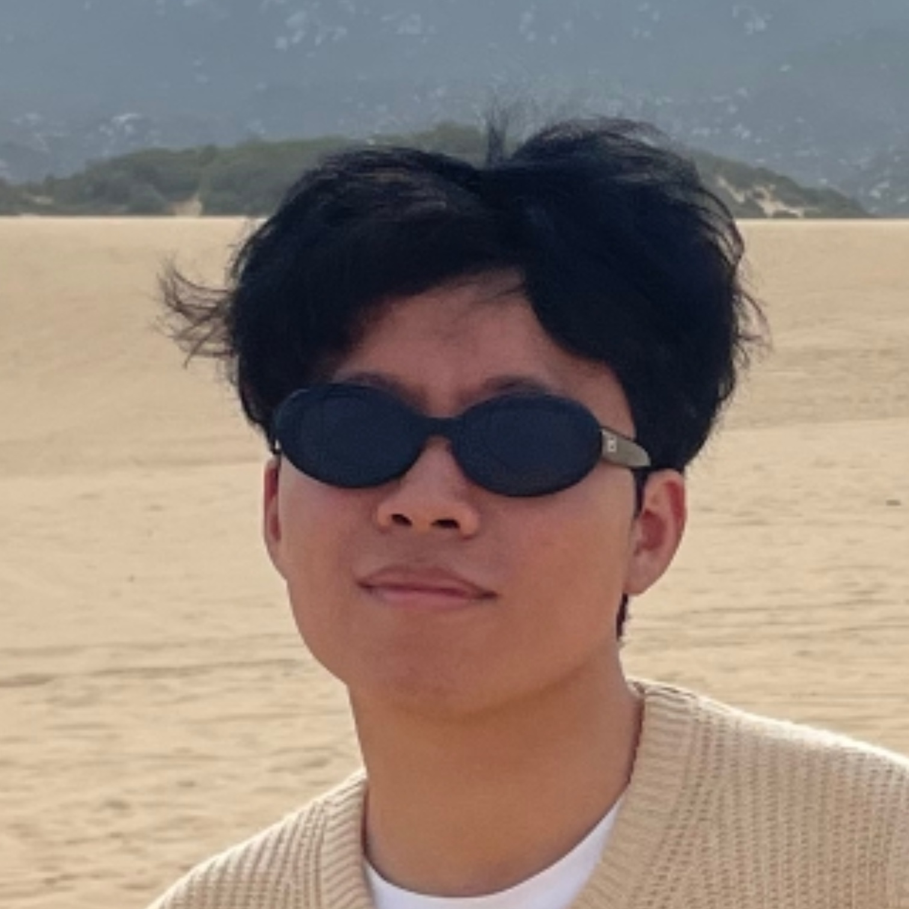

Kyutae Kang
I major in Mathmatics 📏 and have interest in Computer Vision
# Kyutae Kang
I am studying **Mathematics** and pursuing research in
**SLAM, 3D Vision, Optimization, and AI-driven geometric modeling**.
My interests are centered around:
- 📌 SLAM optimization (Jacobian, Cholesky based solvers)
- 📌 ICP & LiDAR mapping (SVD rigid transform, pose refinement)
- 📌 3D geometry + mathematical modeling
- 📌 Computer vision foundations & structure from motion
Currently preparing for **AI/Computer Vision graduate studies**,
with a focus on math-based modeling and research-driven problem solving.
---
### 🛠 Skills
**Python**, PyTorch, NumPy, Matplotlib, Git
**Math:** Linear Algebra, PDE, Optimization, Matrix Calculus
---
### 📩 Contact
If you want to connect or discuss research:
> ✉️ your@email.com